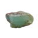

Correspondence Grimoire
Muscles
Type
Entities1
Minerals35
Aegirine AragoniteAventurineBasalt
AragoniteAventurineBasalt BismuthBlack Kyanite
BismuthBlack Kyanite Blue Euclase
Blue Euclase Blue Moonstone
Blue Moonstone Brochantite
Brochantite Bushman Red Cascade Quartz
Bushman Red Cascade Quartz Bustamite
Bustamite Cat's Eye QuartzCelestiteCerussite
Cat's Eye QuartzCelestiteCerussite Champagne Aura Quartz
Champagne Aura Quartz Chrome DiopsideChrysocollaCreedite
Chrome DiopsideChrysocollaCreedite CupriteDanburite
CupriteDanburite Diopside
Diopside LimoniteLodestone
LimoniteLodestone MagnesiteRed TourmalineRutilated QuartzScheeliteSeraphiniteSerpentine in ObsidianSmithsoniteSmoky QuartzStrontianite
MagnesiteRed TourmalineRutilated QuartzScheeliteSeraphiniteSerpentine in ObsidianSmithsoniteSmoky QuartzStrontianite

Andean Blue OpalApache TearApatiteOils51
Other Correspondences3
Therapeutic Applications
- Debility & Poor Muscle Tone: Apply via massage, skin oil/lotion, or bath.
- Muscular Cramp & Stiffness: Apply via massage, compress, or bath.
- Sprains & Strains: Apply via compress.